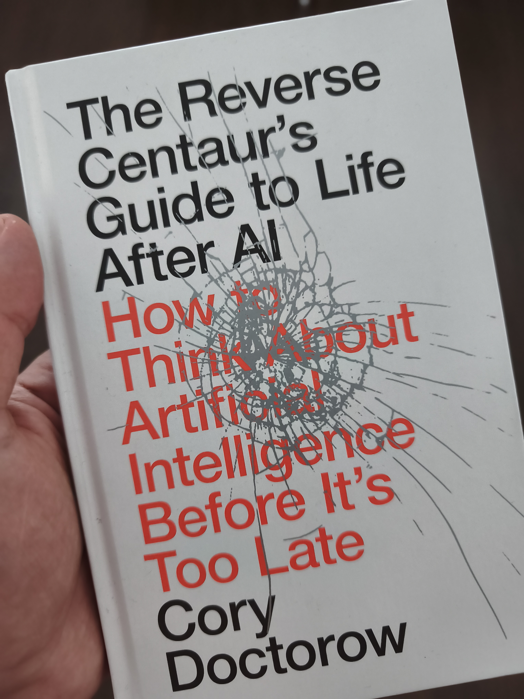

The Reverse Centaur's Guide to Life After AI

Recently, I read another great book by Cory Doctorow: The Reverse Centaur’s Guide to Life After AI. Despite being a quick read, it raises critical questions about the current state of AI. It is refreshing to read someone who treats AI as a powerful tool to solve problems rather than an end in itself.
Among the many points Doctorow makes, three stood out most to me:
- "Who does it for, and who does it to?". Technology isn’t neutral and we need to examine who actually benefits its adoption.
- The inevitabilism trap: The narrative that we must accept every tech rollout is false, the industry still has the power and the obligation to reject bad implementations.
- The real audience: Doctorow questions whether big AI products are truly built for end users or aimed for Wall Street.
A refreshing analysis of AI's impact on work and society. A must-read!
 When You Don’t Own Your Code
When You Don’t Own Your Code
 From Know-it-All to Learn-it-All
From Know-it-All to Learn-it-All
 The Legacy Code of Tomorrow
The Legacy Code of Tomorrow
 The Paradox of Over-Automation
The Paradox of Over-Automation